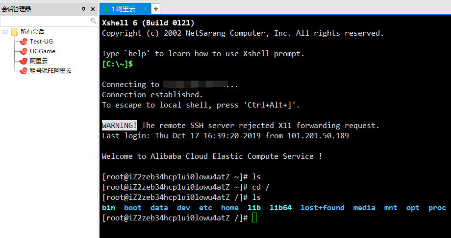

shell,terminal,TTY与CLI
作为计算机非科班出身人员，经常会看到shell,terminal,TTY与CLI 这写名字，本文做下对应解释，以防后用
命令行界面（CLI-command-line interpreter）
命令行界面， 是使用文本命令与计算机进行交互的用户界面，通俗来讲，就是你看过的那种满屏幕都是字符的界面。在熟记命令的前提下，使用命令行界面往往要比使用图形用户界面效率高得多。
shell
大家都知道，操作系统有一个叫做 内核 (Kernel) 的东西，它处于系统的底层，是不能让普通用户随意操作的，于是就需要一个专门的程序，它接受用户输入的命令，然后帮我们与内核沟通，最后让内核完成我们的任务。这个提供用户界面的程序被叫做 Shell (壳层)。
通俗理解的话，就是一个命令解释器（程序），专门解释语句或命令用的。
Unix 及类 Unix 系统下的：sh (Bourne shell)，bash (Bourne-Again shell)，zsh (Z shell)，fish (Friendly interactive shell)等；Windows 下的 cmd.exe (命令提示符) 与 PowerShell,都是shell程序，而这些程序的运行界面就是CLI
可以近似地认为linux shell=bash 而 windows=cmd, 但是二者有着最根本区别：linux shell是个linux 操作系统的用户交互层。而windows下的cmd只是一个小桌面应用，不能脱离图形界面单独存在。bash功能强大，cmd功能十分有限，windows也有强大的shell叫windows powershell
终端 (Terminal)
早期的终端其实就是电传打字机(Teletype / Teletypewriter) ，Unix 的创始人把很多台 ASR-33 连接到计算机上，让每个用户都可以在终端登录并操作主机，从而创造了计算机历史上第一个真正的多用户操作系统 Unix。
电传打字机的英文缩写就是 tty，所以我们可以直接认为终端 (Terminal) = TTY。
终端与shell
终端的工作就是：从用户这里接收输入（键盘、鼠标等输入设备），扔给 Shell，然后把 Shell 返回的结果展示给用户（比如通过显示器）。 Shell的工作就是：从终端那里拿到用户输入的命令，解析后交给操作系统内核去执行，并把执行结果返回给终端。
随着计算机技术的发展，传统的终端硬件已被抛弃，我们现在用到的更多是终端模拟器 (Terminal Emulator)
譬如，我们登录阿里云时用的xshell，就可以理解为这一种终端模拟器:

我们通过终端向主机发送命令，命令进入shell,shell 与内核交互，返给终端，终端展示出来，基本就是这个流程。
而当在linux机器上直接操作时，一般默认进入的是linux的bash程序，此时通过该程序可以直接与内核进行交互（ps:简单理解，linux没有系统容学习过）,当在linux上打开一个terminal时，操作系统会将terminal和shell关联起来，当我们在terminal中输入命令后，shell就负责解释命令